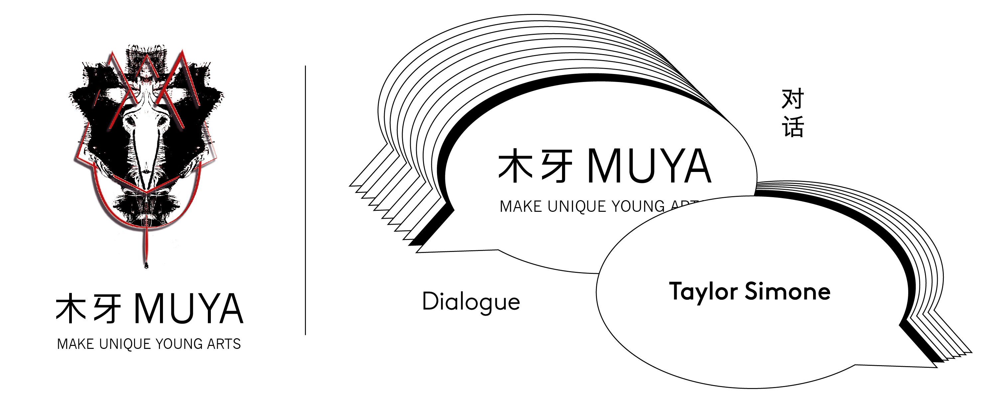
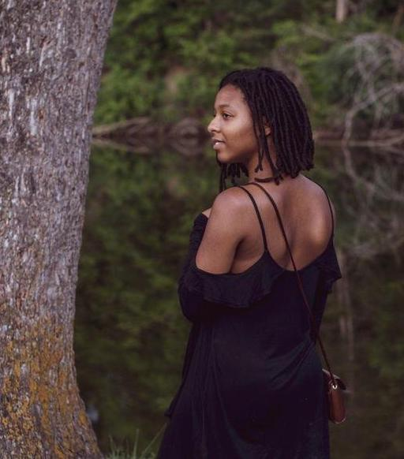
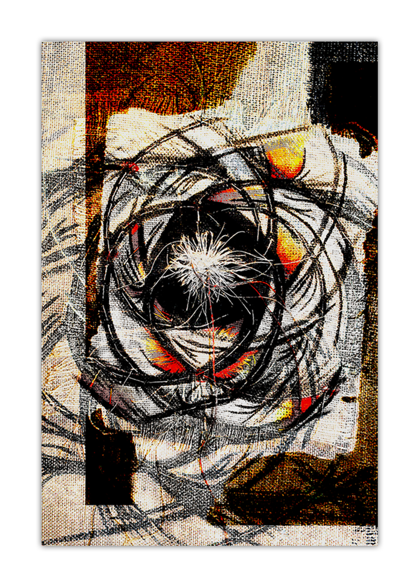
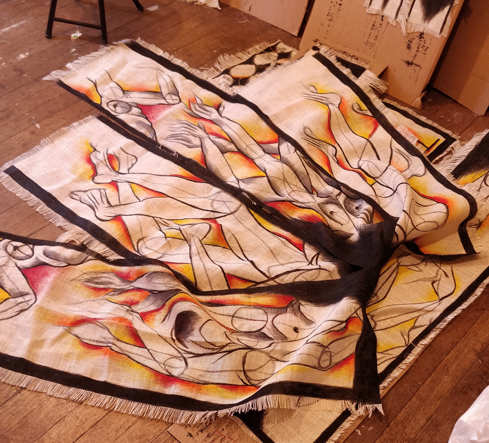
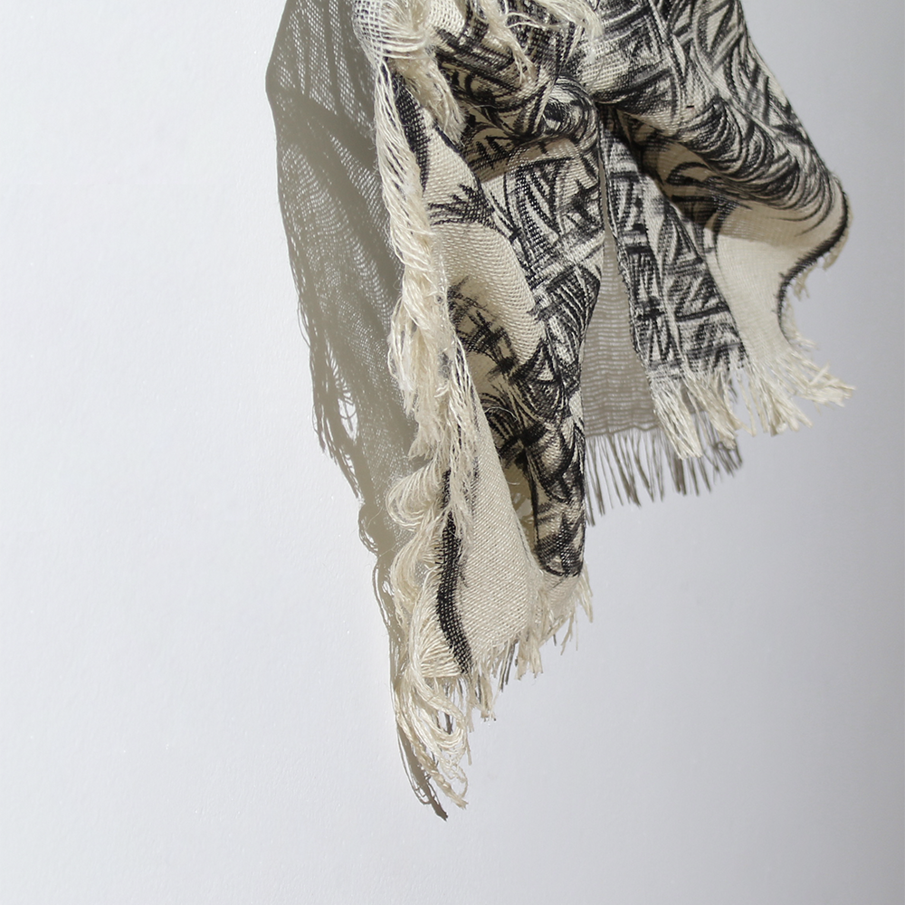
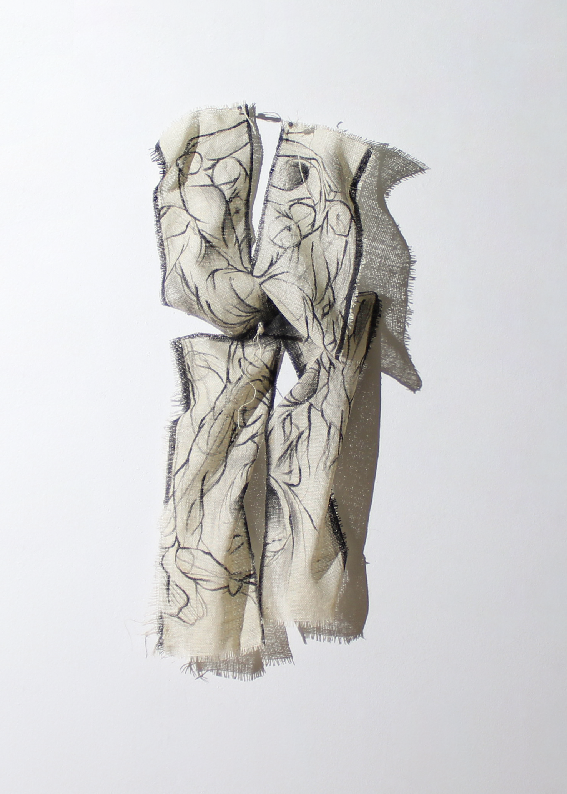
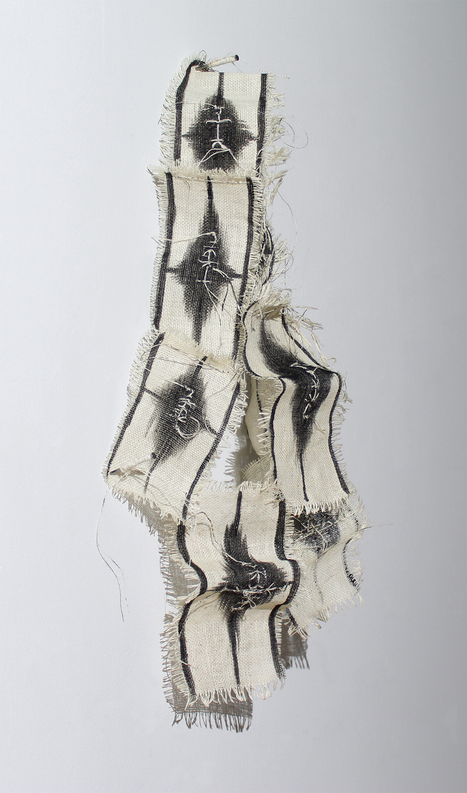
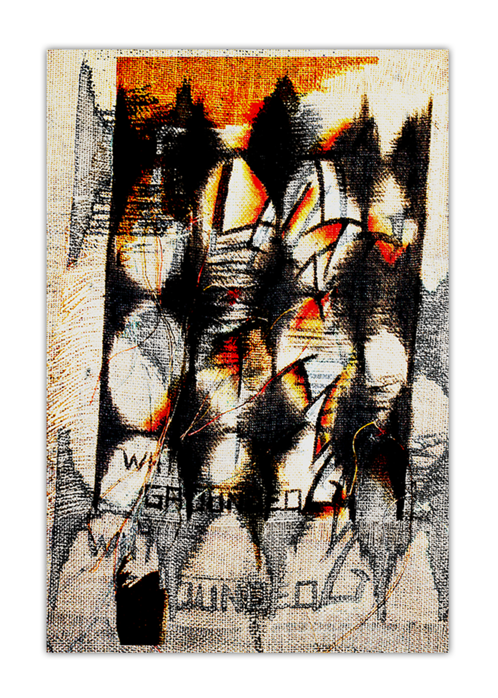
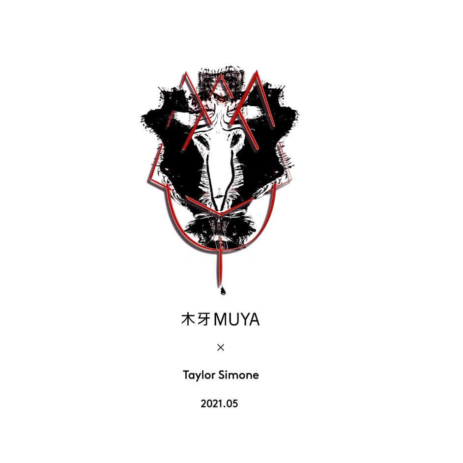
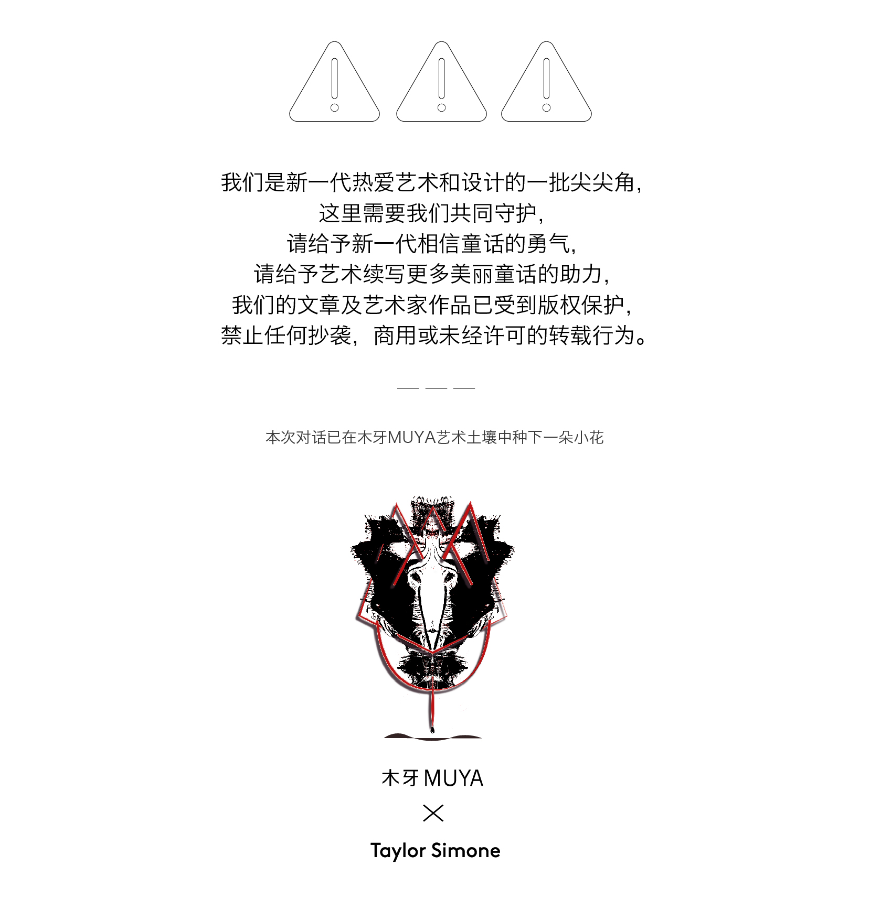

她用布料编织疼痛 | Taylor Simone 「艺术访谈」
欢迎来到木牙Make Unique Young Arts，用艺术来感悟和解析人类情感中的痛苦、悲伤、愤怒到最后的接受！
我们最后选择的是跟自己的悲伤和解，而不是忘却。因为那曾经使我悲伤过的一切，也是我最热爱的一切。--- 詹青云
悲伤是重塑自我的一种方式 而悲伤的理由促使每个人走向不同，在这个过程中我们从情绪中剥离出自我，我们开始不断的重组思考，我们感悟愤怒的原因，以及最后挣扎着和解并接受自我。这不是一个单一的过程，而是不断重复的。
今天我们邀请了Taylor Simone来到木牙MUYA和我们一起来讲述在不断破碎的状态下以及统治文化中缺乏处理悲伤的空间和由此产生的东西。
In the end, we choose to make peace with our grief rather than forget it. For the things that have made me sad are the things that I love the most. - ZhanQingYun
Sadness is a way to reinvent ourselves and the reason for being sad pushes everyone in a different direction. In the process we detach ourselves from our emotions, we begin to constantly reorganize our thinking, we understand the cause of our anger, and finally struggle to reconcile and accept ourselves. It's not a single process, it's repeated.
We invited Taylor Simone to join us in MUYA to talk about the lack of space to deal with grief and what comes out of it in a state of constant fragmentation and in a dominant culture.

Taylor Simone是来自底特律大都会的跨学科艺术家，居住在俄亥俄州托莱多市。2015年获得东密歇根大学平面设计专业学士学位，2019年获得弗吉尼亚联邦大学视觉传达专业硕士学位。她的实践集中在空间制造上。Taylor是出Exodus: School of expression的创始人，目前任教于鲍灵格林州立大学。
Taylor Simone is an interdisciplinary artist from Metro Detroit and resides in Toledo, Ohio. She received her BFA in Graphic Design from Eastern Michigan University in 2015 and her MFA in Visual Communication from Virginia Commonwealth University in 2019. Her practice centralizes around space making. Taylor is the found of Exodus: School of expression and currently teaches at Bowling Green State University.


悲伤可以理解为一个人在失去亲人后重新认识自我的过程。悲伤的诠释往往是与亲人的逝去有关，而否认可能失去的东西的复杂性。在一个严重依赖统治的社会中，失去被定位为一个固有的常量，许多人每天都在导航。
在我目前的作品《悲伤花园》中，我将悲伤作为一个连续体来探索。我将这种不断破碎的状态视为一个胜利、重生的地方，以及让祖先的知识得以倾泻的空间。在这些探索中，我研究了在统治文化中缺乏处理悲伤的空间以及由此产生的东西。
每一件作品都像一个胶囊，捕捉了许多失落的表象。他们充满了令人麻木的痛苦、悲伤、愤怒和接受。屈服于自我的抽象的胜利，在散居非洲的人们中又回到了视觉抽象的传统。我们有力量把我们对抽象的集体理解作为一种捕获代表和精神的手段。
Grief can be understood as a process of relearning one’s sense of self after a loss has occurred. Interpretations of grief often sit in relation to the passing of loved ones while denying the complexity of what can be lost. Within a society that relies heavily on domination, loss is positioned as an inherent constant that many navigate daily.
Within my current body of work, Gardens of Grief, I explore grief as a continuum. I lean into this constant fragmentation as a place of triumph, rebirth, and space for ancestral knowledge to pour through. Within these explorations, I investigate the lack of space to process grief in a culture of domination and the things that grow from it.
Each piece functions as a capsule that captures the many facades of loss. They hold paralyzing tides of pain, sadness, anger, and acceptance. The triumph of surrendering to the abstraction of self-ties back to visual abstraction traditions within the African-Diaspora. There is strength to pull our collective understanding of abstraction as a means of capturing both the representative and spiritual.


➤ 木牙MUYA: Taylor大部分作品都是由布制作而成。您能和我们分享下您的材料研究的相关经历吗？这个材料与您谈及的文化词汇 – 非裔（African-Diaspora）的相关性是怎样的？
Most of Taylor's works are produced by fabric. Could you share with us some of your material research experience? How does this material connected or related with the culture term you mentioned – African-Diaspora?
Taylor: 我在粗麻布上看到了一个美人。它的质地和植物般的特质在它成为首都之前就已经存在了。在我看来，通过它的网格结构，它是在资本主义中被搁置的一种方式。在我看来，这也反映了一种坚韧的气质。我开始使用粗麻布，因为我对它有一种亲和力。事后看来，我现在可以理解我在材料中看到自己的方式。
它道出了我作为黑人女性的经历以及我的经历中其他相互关联的事实。在我的实践中，它是自我的延伸。我花了很多时间来分解和解构。我发现从网格中提取单个线程是有希望的。我最新的作品让我把解构推向了一个混乱的空间。当我把粗麻布弄硬的时候，我就会想到波纹和事件，比如损失，它扭曲了网格的平面。
There’s a beauty I see in burlap. Its texture and the plant-like qualities it carries from its time before functioning as capital. It reflects back to me, through its gridded structure, a way that it's being suspended within capitalism. It also reflects back to me an aura of resilience. I began working with burlap because I had an affinity for it. In hindsight, I can now understand the ways that I saw myself in the material.
It rings truth into my experience of black womanhood and other interconnected facades of my experience. It currently functions as an extension of self in my practice. I’ve spent a lot of time unweaving and deconstructing. I find hope in pulling individual threads from the grid. My latest body of work has allowed me to push deconstruction into a space of disruption. When stiffening the burlap, I am working with, I am thinking of ripples and events, such as loss, that warp the planes of the grid.

➤ 木牙MUYA: 在你的实践中，你希望强调和讨论的关于非洲侨民文化的什么?
What do you wish to highlight and discuss about the culture - African-Diaspora in your practices?
Taylor: 就我的视觉和写作实践而言，抽象一直是我工作的核心，就在最近，我一直在思考抽象的遗产。这种抽象，作为黑人的传统，被用来捕捉我们所见和所不见的东西。我还处在将这些想法与研究联系起来的阶段。捕捉看不见的东西的想法对我来说一直是真实的，但在我过去的工作中，它只被放在与创伤有关的地方，或者那是我在其中看到的全部。现在我的镜头正在扩大，捕捉，解释和解读所有的事物，我不能脱离传统。
空间制作/组织也是我实践的一部分。我开始理解抽象在设想、重组和推测工作中的作用。这更直接地向整个边缘社区发出了声音。
In terms of my visual and writing practice, abstraction has always been at the core of my work, and just recently, I have been thinking about legacies of abstraction. The ways that abstraction, as a black tradition, has been used to capture both what we see and do not see. I am still at the start of tying these thoughts to research. The idea of capturing the unseen has always rung true to me but, in my past work, it was solely placed concerning trauma or that’s all that I was seeing in it. Now my lens is expanding to capture, interpret and decipher all the things coming through and I cannot disconnect that from tradition.
Space making/ Organizing is also a part of my practice. I am starting to understand abstraction’s role within the work of envisioning, restructuring, and speculation. This speaks more directly to marginalized communities as a whole.

➤ 木牙MUYA: Gardens of Grief 是一个非常美丽的项目。当您在布上绘制图案的时候，您是如何思考材料语言和您的绘画语言之间的相互演绎？
Gardens of Grief is a really pretty project. When you were drawing patterns on the fabric, how do you think about the interpretation between material language and your drawing?
Taylor: 直觉是我实践的一个重要部分。当我在我的工作室里和材料一起工作时，它成为一种获得理解的宣泄方式。就像我之前说的，我把粗麻布看作是自我的延伸。我在想它能装多少。这种布料的一个有趣之处在于，你不只是在它上面涂上颜料，颜料在某种程度上与线结合在一起。这对织物加劲的过程也是一样的，胶水密封，也被吸收。当我从它的网格中抽出丝线时，单个的纤维开始分离和脱落。
这种转变让我想起了我在解构和破坏中感受到的希望。我画的人物处于一种变化的状态，而材料本身也在某种程度上经历了这种变化。我相信这语言中有一种美。事情看起来像是在一起又在分开。这是个好地方。我深深地共鸣了这种存在状态以及它是如何通过视觉传达出来的。
Intuition is a big part of my practice. When I am in my studio and working with materials, it becomes a cathartic way of gaining understanding. Like I said earlier, I look at burlap as an extension of self. I think about what it can hold. An interesting thing about the fabric is that you don’t just paint on top of it, the paint in some ways binds with the threads.
This also is the same for the process of stiffening the fabric, the glue seals but, also is absorbed. When I am pulling threads from its grid, the individual fibers start to separate and shed. There’s something about the transformation that calls back to the hope I feel in deconstructing and disrupting. The figures I paint are in a state of transformation and the material itself has experienced it on some level. I believe there’s a beauty in this language. Things appear like they are coming together and falling apart. That’s a sweet spot. I deeply resonate that state of being and how it comes through visually.

➤ 木牙MUYA: Taylor作品中只用到了黄，橙，红，黑。可以详细的解释一下为什么使用这几个颜色的原因吗？
In Taylor's work only use yellow, orange, red, and black. Could you explain in detail why these colors?
Taylor: 我最近刚结束了一段时间使用红色、黑色和白色的有限调色板的生活。在某种程度上，这种调色板与一段虚无主义和创伤有限的时期相平行。我所看到的只是痛苦和我正在研究的统治体系的巨大本质。
在我的新作品中，我想要确保一种胜利的感觉，因为悲伤和创伤不仅仅包含着痛苦。我用黄色、橙色和红色来表示。它们代表了在悲伤蜕变过程中不容易看到的东西，比如祖先的知识、胜利、遗产的力量和时间。在选择这些颜色时，我只想扩大红色。红色有一些肉质的东西，所以橙色和黄色作为一个从心理到超心理的梯度。
I recently came out of a period of using a limited color pallet of red, black, and white. In a way, this color palette paralleled a period of nihilism and limited scope of trauma. All I saw was the pain and the vast nature of the system of domination I was researching.
Within my new work, I wanted to make sure that a sense of triumph came through because grief and trauma don’t just house pain. So, yellow, orange, and red are my way of addressing that. They represent the things not so easily seen during the metamorphosis of grief like ancestral knowledge, triumph, the strength of legacy, and time. When choosing these colors, I wanted to just expand upon the red. There’s something fleshy about red, so orange and yellow function as a gradient from the psychical to meta psychical.

➤ 木牙MUYA: 部分作品被钉在墙上展示。在您布置和展示过程中，您是如何思考通过展示的方式转化或反应Gardens of Grief 的作品概念的呢？
Some of the pieces are pinned on the wall. How do you consider the way of installation shifts or reflects the concept of Gardens of Grief?
Taylor: 当我在我的工作室里被作品包围时，每一件作品都像是有生命的，或者像是有能量的。我经常思考美术馆的工作方式。我为安装创造了某种仪式。每一块我用了三颗钉子(过去、现在、未来)。我用撕成碎片的线把它们包起来。我想这主要是为了我，但这是一种魔法，保护和激活空间的行为。影子也同样重要。它们从一个通常看不见的角度照亮电网。我不确定缠扰是不是最好的词来描述阴影的基调，但它是浮现在我脑海中的。它们就像桥梁，类似于颜色的梯度。
When I am in my studio surrounded by work, each piece feels like its living or like its holding energy. I think often about the ways the gallery deactivates work. I’ve created somewhat of a ritual for installation. I use three nails for each piece (past, present, future). I wrap them in threads that have been pulled from the pieces. I think it’s mostly for me but, it’s an act of magic, protection, and activation of the space. Shadows are important in the same ways. They illuminate the grid from a perspective that usually is unseen. I am not sure haunting is the best word to describe the tone of the shadows but, it’s what comes to mind. They are like bridges similar to the gradients of color.

➤ 木牙MUYA: 悲伤、痛苦、愤怒和接受的麻痹浪潮都是一种情绪，Taylor如何理解作品和情感之间的关系呢？这种情感是来自于作品本身还是创作者？
Sadness, pain, anger, and the paralyzing wave of acceptance they are emotions. How does Taylor understand the relationship between works and emotions? Does emotions from work itself or from the creator?
Taylor: 我过去常常逃避我的情绪在工作中出现的方式。《悲伤花园》标志着一段时间的逃离，我仍在其中，为这些情感腾出空间。我不知道为什么我认为自己必须将个人体验与探索更大系统的方式分开。我觉得我把工作看作一种逃避。现在我把它看成是一条通路。之前我的作品有了一些空白现在我开始觉得很完整了。这些情绪来自于我，但它们是社会政治的产物。所以，通过为我的悲伤保留空间，我也创造了批判的空间。我仍然想推动这个交叉点，我希望它能发光。
I used to run from the ways that my emotions showed up in the work. ‘Gardens of Grief’ has marked a timescape, that I am still in, of making space for those feelings. I am not sure why I thought I had to separate my individual experience from the ways I was trying to explore larger systems. I think I saw my work as an escape. Now I see it as a path through. Before there were gaps in my work and it's starting to feel whole. The emotions come from me but, they are a product of the sociopolitical. So, by holding space for my grief, I am also creating space to critique. I still want to push that intersection and I hope it shines through.


➤ 木牙MUYA: 我们听说Taylor正在创始一所艺术学校 – Exodus School of expression。这是一个令人兴奋的工程。您能和我们分享下推动您或启发您来创建学校的初衷是怎样的呢？
We heard Taylor is currently funding Exodus School of expression. That’s really an exciting project. Could you share with us some experience about what inspires or push you to work on this?
Taylor: 这是令人兴奋的!我是一年前从挫折中产生这个想法的，现在这个想法变得很美好。我有很多想法和事情在推动我，但我认为最根本的原因是缺乏耐心。在我从学生到教育者的教育经历中，我发现整体结构缺乏安全性。很多大学都在讨论多样性问题，在我教书的第一年结束时，我发现自己在问自己愿意等多久。
我也从其他人那里听到了类似的情绪。那么问题来了，如果不是学术界，那是哪里呢?所以，我一直在思考在哪里以及如何去分散这种权力。这不是一个新想法。在我看来，这是一种独特的方式，但美国的另类学校历史悠久。特别是在非裔美国人社区。我觉得这么说很重要。
It is exciting! This idea came to me a year ago out of frustration and has grown into something beautiful. I have a lot of thoughts and things pushing me but, I think at the core of it is impatience. Within my educational experiences from student to educator, I have found a lack of safety in the overall structure.
A lot of universities are having conversations around diversity and at the end of my first year of teaching, I found myself asking how long I will be willing to wait. I was also hearing similar sentiments from others. Then the question became if it’s not academia, then where? So, I’ve been motivated to think about the where and about how to decentralize that power. It’s not a new idea. Its unique, in ways to my prospective, but there’s a history of alternative schools in United States. Especially in the African American community. I feel it’s important to say that.

➤ 木牙MUYA: 作为艺术家，你最想告诉普通公众什么？除了工作之外，Taylor 平时是如何规划自己的工作时间的？
As an artist, what do you wish to tell / show to the public? In addition to work, how does Taylor plan your daily schedule especially in balancing the work and art creation?
Taylor: 这是一个大问题，我不确定我现在是否有答案。我希望我的移动方式可以向别人展示另一种导航方式。我希望能像我的导师韦斯利·泰勒一样激励别人。这种导航方式的一部分是感受到不断创造或刷任务的压力，但不要屈服于这种压力。我的日常作息轮班，但我尽量照顾好自己的核心。在完美的一天，我有一个缓慢的早晨。我通常会教一两门课，但是，为有激情的项目腾出空间。这意味着一两个小时的出埃及和/或一个小时的创造性的东西。我晚上8点以后不工作也不接电话。我可以用画来帮助处理和释放信息。焦虑是一件事，所以我试着每天冥想一到三次。在不那么完美的一天，我到处都是。
That is a big question, and I am not sure if I have the answer to it right now. I hope that the way I move can show someone else an alternative way of navigating. I would love to inspire people the same way, one of my mentors, Wesley Taylor inspired me. A part of that way of navigating is feeling the pressure to constantly be producing or grinding but not giving in to that pressure. My daily schedule shift but, I try to keep taking care of myself at the core. On a perfect day, I have a slow morning. I usually teach a class or two but, carve out space for passion projects. That means an hour or two for Exodus and/or an hour of something creative. I don’t work or take calls after 8:00 p.m.. I may draw to help with processing and letting go of information. Anxiety is a thing so I try to meditate once to three times a day. On a not-so-perfect day, I am all over the place.

✯ Which inspire your works most ✯
“Round and round I seem to go / always had the antidote / looking for the Holy Ghost / Found him in the missing note / sinking in a holy boat / Round and round” - Erykah Badu’s song Out My Mind Just In Time

✤ Taylor Simone网站（Taylor Simone Website)
✤ INS(instagram): @taytay.simone
✤ 邮箱（Contact Email): Taylorssign@gmail.com


木牙微信订阅号